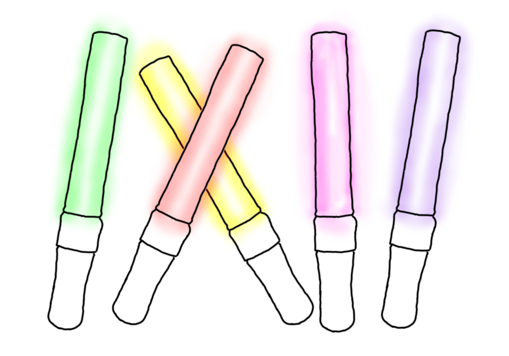

ももクロちゃんやモノノフの専門用語辞典
ももいろクローバーZ（通称：ももクロちゃん）
- 百田夏菜子、玉井詩織、佐々木彩夏、有安杏果、高城れにの５人組アイドル。
- アクロバットがすごい。（あーりんは苦手）
- 可愛くて元気。
- アイドルっぽくなくて好き。（※個人の感想です。）
百田夏菜子
- イメージカラーは赤。
- ももクロちゃんのリーダー。
- キャッチフレーズは「茶畑のシンデレラ」と「えくぼは恋の落とし穴」。
- 勉強ができないタイプのおバカさん。
- 足が速い。運動神経が良い。
- NHK連続テレビ小説「べっぴんさん」に出てる。
玉井詩織（通称：しおりん）
- イメージカラーは黄色。
- なんでも屋のスーパーサブ。
- キャッチフレーズはは「ももクロの若大将」。
- 食いしん坊。なのに、美脚でスタイルが良い。
- ピアノが上手。弾きながら歌える。（ライブではしおりんのピアノ伴奏で歌うことも。）
- 運転免許を持ってる。（しかもマニュアル！）
佐々木彩夏（通称：あーりん）
- イメージカラーはピンク。
有安杏果
高城れに
モノノフ
- 「ももいろクローバーZ（通称：ももクロちゃん）」というアイドルのファンのこと。
- 推しメン（イチ推しのメンバー）や、住んでいる地域によって「デコノフ」「プニノフ」「ちゅらノフ」など呼び方が変わる。
- ももクロちゃんに会った人はたちまちモノノフになってしまうという伝説があるとかないとか・・・。
- タカノフ（れにちゃん推し）は変人が多いと言われている。

ライブ／イベント
- ライブやイベントには、推しメンのイメージカラーの服（参戦服）を着て行く。
- 帽子から靴までグッズが出ているので、全身グッズで固めれば完璧なモノノフ装備になる。
- ももクロちゃんの衣装を真似して自作してくるすごい人もいる。（クオリティがめっちゃ高い！）
- 「サイリウム」の色を歌っているメンバーや、推しメンのイメージカラーに変えて応援する。
- 自己紹介や曲中では「コール」をする。
コール
- 曲中や、自己紹介の時にかける合いの手のこと。
- 「うりゃ！おい！」などの一般的なコールや、「かなこぉ↑↑」「あーりん！」などのメンバーの名前を呼ぶコールがある。
- 「うりゃ！」をコールする人と「おい！」をコールする人がいる。この分担が揃うことで「うりゃ！おい！」と聞こえる。

サイリウム
- 光る棒のこと。ペンライトと言うこともある。
- ももクロちゃんの公式サイリウムは「赤」→「黄色」→「ピンク」→「緑」→「紫」の順番（それと逆順）に光る。
- ライブが始まった時は4本持っていたのに、ライブが終わるころには（疲れて）1本まで減ってることもしばしば・・・。
- 長時間のライブや、2日間連続のライブだと、電池切れを起こすので、予備の電池を持ってると安心。
- 1色しか光らないものと、5色に光るものがある。

箱推し
- メンバー5人全員のことを推している人。
- 参戦服は真っ黒。（松崎しげる・・・違）
- 推しをひとりに絞れない優柔不断の人らしい…。
- ライブ中はサイリウムの色を忙しなく変えている。